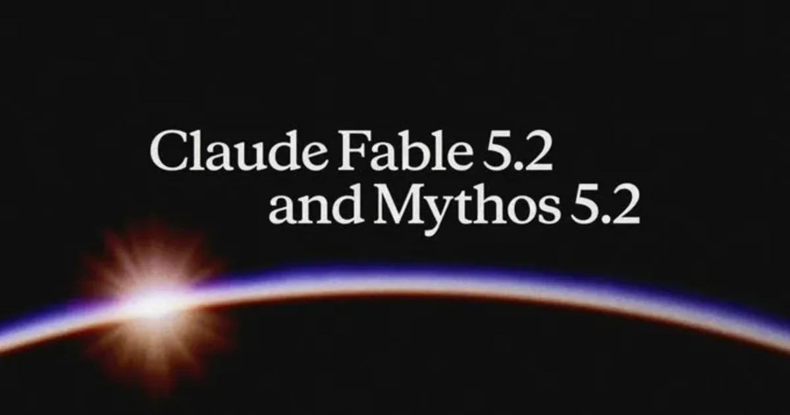
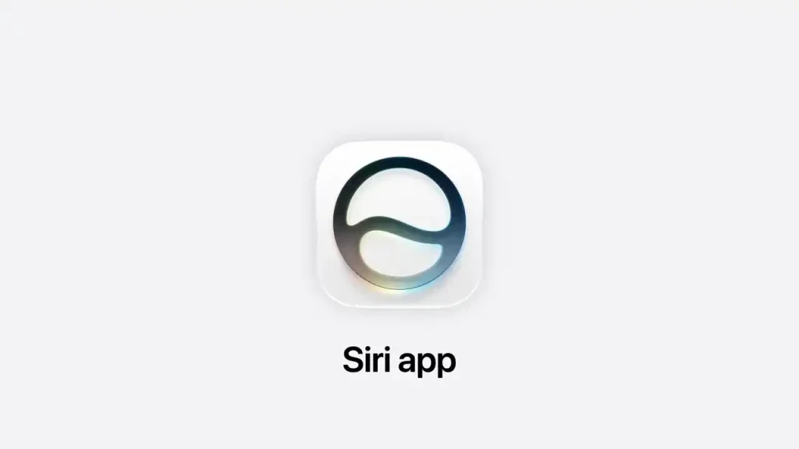

🤖 AI
14 條🤖
CNMO科技-最新资讯
CNMO科技-最新资讯
Anthropic 正式推出新一代旗艦模型 API 價格降 20%
Anthropic 正式推出 Claude Fable 5.2 及 Claude Mythos 5.2，重點提升編程、邏輯推理及視覺理解能力，輸出速度最高較上一代快 30%，API 價格降低兩成。

🤖Yahoo! 新聞 - 港聞
';" />
Yahoo! 新聞 - 港聞
Claude Fable 5.2 及 Mythos 5.2 登場 多項能力顯著提升
Anthropic 於 11 月 9 日推出 Claude Fable 5.2 及 Claude Mythos 5.2，官方表示兩者在幾乎所有受測能力上超越 Opus 5.5。
🤖
微信公众号-新智元
微信公众号-新智元
GPT-6.2 首測！網友：終於有個能壓倒 Opus 5.5 的了？？
網友實測 GPT-6.2，認為終於有模型能在測試中壓倒 Claude Opus 5.5；報道引述首批測試者的評價。
🤖
Readhub
Readhub
OpenAI 推出研究工作負載管控系統，干預後 35 秒內停止輸出
OpenAI 已構建中央系統 Control Room，追蹤研究基礎設施中的模型工作負載，在出現安全隱患時可於決定干預後 35 秒內停止模型輸出。
🤖
Readhub
Readhub
谷歌宣布 Pathways 在雲端正式全面開放
谷歌自主研發的大規模分佈式機器學習運行系統 Pathways，現已在 Google Cloud 全面開放；該系統曾用於訓練 Gemini 等大型模型。
🤖
Readhub
Readhub
Meta 發布輕量級 AI 模型 Muse Ember
Meta 超級智能實驗室發布輕量級 AI 模型 Muse Ember，每百萬輸入 token 定價 0.1 美元，可用於工具調用、編程子任務及長文檔解析等智能體任務。
AI人工智慧 – 科技島-掌握科技新聞、科技職場最新資訊
';" />
AI人工智慧 – 科技島-掌握科技新聞、科技職場最新資訊
Meta 擴展 Muse AI 功能 Spaces 助用戶管理專案與任務
Meta 為新一代 AI 代理人 Muse 推出全新功能 Spaces，提供用戶與 Muse 溝通及協作的新方式，協助管理專案與任務。
🤖
Readhub
Readhub
AI 推理平台 Fireworks 遭入侵 部分客戶數據受影響
Fireworks 披露安全事件影響部分客戶賬戶及賬單信息，少數賬戶的密鑰、數據集及未完成模型權重亦受波及；源頭是第三方雲服務商 10 月 23 日發生的安全事件。
🤖
微信公众号-新智元
微信公众号-新智元
OpenAI 破譯數論百年懸案，揭開 P≠NP 重大線索！千禧年神題逼近了
報道稱 OpenAI 在數論研究取得突破，為千禧年難題 P≠NP 帶來重大線索；詳情有待同行驗證。
🤖
微信公众号-机器之心
微信公众号-机器之心
兩年內把 GPT-6 的智能裝進手機！我們已經抵達端側智能的「撞線前夜」
文章探討端側智能的發展，認為兩年內手機有望運行 GPT-6 級別的智能，端側 AI 已到達爆發前夜。
🤖
AI人工智慧 – 科技島-掌握科技新聞、科技職場最新資訊
AI人工智慧 – 科技島-掌握科技新聞、科技職場最新資訊
AI 不一定先搶飯碗？71% 人資預期工作將改變 53% 企業卻沒提供 AI 培訓
美國人力資源認證機構 HRCI 報告指，AI 更直接的影響是改變現有職位的工作內容，而非直接取代整個職位；但逾半企業未有提供 AI 培訓。
AI人工智慧 – 科技島-掌握科技新聞、科技職場最新資訊
';" />
AI人工智慧 – 科技島-掌握科技新聞、科技職場最新資訊
輝達調查黃仁勳與中國女間諜關係 美國國會兩黨同步施壓
輝達董事會宣布啟動獨立調查，釐清黃仁勳是否成為外國情報活動鎖定目標；事件延燒至美國國會，兩黨議員均要求進一步調查。
 流動日報
流動日報
GPT-6.2 Sol 模型現身 ChatGPT 及 Codex 一次生成 3D 場景測試勝 Opus 5.5
X 用戶稱使用 GPT-6.1 Sol 時被路由至尚未公布的 GPT-6.2 Sol，並以單一提示詞生成 Three.js 立體場景，稱在自己的一次生成測試中勝過 Claude Opus 5.5。

🤖流動日報
';" />
流動日報
Siri AI 擬明年升級為 AI Agent 主動助用戶完成任務
據彭博記者 Mark Gurman 報道，Apple 可能於明年讓 Siri 具備主動行動能力，成為真正的 AI Agent；同時正試驗新的工程流程。